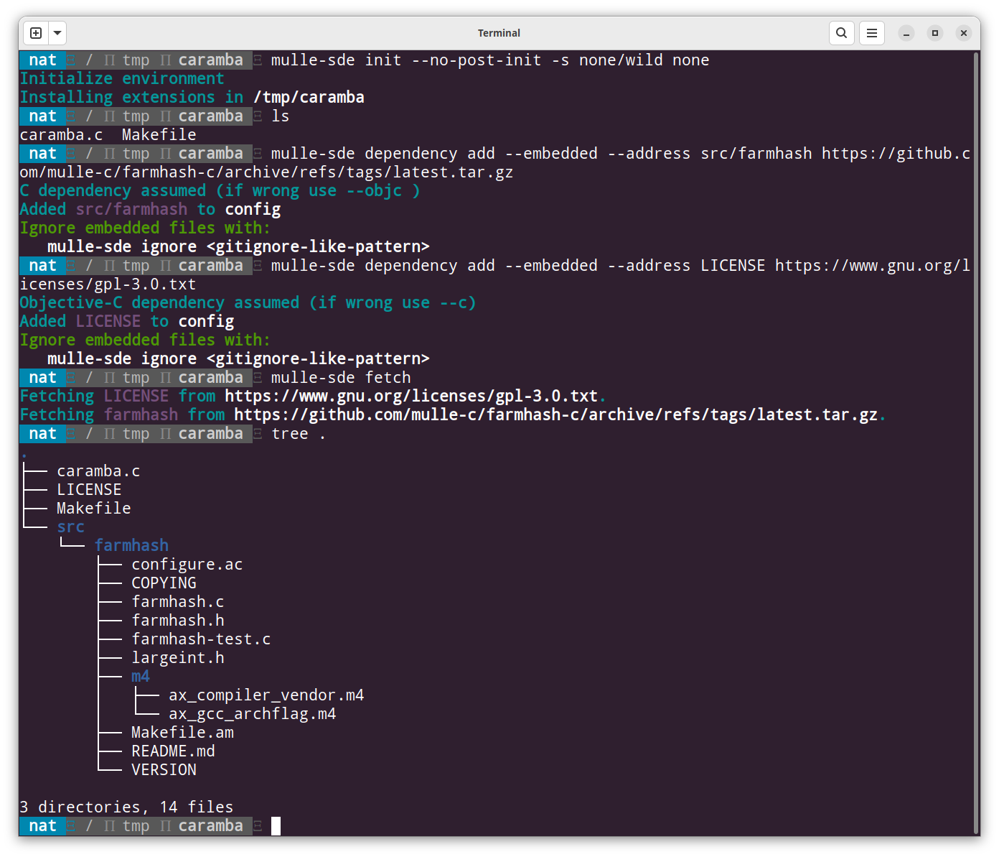

🌲 Project Compositor
Project composition adds remote or local files (and directories) to a project. The project, as stored in a source code management sytem like git, would commonly not include these files. These files would typically be part of your build process (Makefile) though. So after a checkout, you need to run the project composition to complete the project complete.
Quick Demo
For project composition only the most barebones, unencumbered virtual environment is needed to store a few settings. On the assumption, that we are in the right place already, prepare the virtual environment:
mulle-sde init --no-post-init -s none/wild none
As mulle-sde will not be used for building, its most convenient to use the
none/wild environment style. This makes the virtual environment completely
unencumbered.
Add a LICENSE file
With the dependency add --embedded command a LICENSE file will be downloaded
from a remote source and placed into the project root at a later time:
mulle-sde dependency add --embedded \
--address LICENSE \
https://www.gnu.org/licenses/gpl-3.0.txt
If there was a
gpl-latest.txt, we would be up to date with the latest GPL automatically.
Add some source code
Add a small hash library from the “mulle-c” project and place it into src.
mulle-sde dependency add \
--embedded \
--address src/farmhash \
https://github.com/mulle-c/farmhash-c/archive/refs/tags/latest.tar.gz
Run the composition
With these dependency definitions in place, it’s now time to run
mulle-sde fetch to compose the project.

To get rid of the embedded files, use mulle-sde clean tidy. Project
composition is fairly powerful. You can add and remove embedded dependencies
and change their URLs at will. A new mulle-sde fetch will track the
changes and synchronize your project.
Final Words
If you don’t need any other functionality from mulle-sde, you can get project
composition from mulle-sourcetree
only. You would not need to run mulle-sde init then.
The fetching of archives and git repositories is done with
mulle-fetch. mulle-fetch relies on
heuristics to save typework. This will work fine in common cases, but needs
explicitness, when it fails. Nevertheless just having to type
mulle-fetch --github mulle-c mulle-container to fetch a repository or
mulle-fetch https://github.com/mulle-c/mulle-buffer/archive/refs/tags/latest.tar.gz
to download and unpack a github tar link is handy.